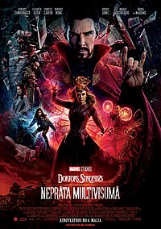

Doktors Streindžs neprāta multivisumā

"Doktors Streindžs neprāta multivisumā" (angļu: Doctor Strange in the Multiverse of Madness) ir 2022. gada ASV supervaroņu filma, kas balstīta uz Marvel Comics komiksiem par Doktoru Streindžu. Filmu veidojusi studija Marvel Studios un izplata kinokompānija Walt Disney Studios Motion Pictures. Šis ir turpinājums filmai "Doktors Streindžs" (2016) un 28. filma Marvel Cinematic Universe (MCU) filmu sērijā. Filmas režisors ir Sems Reimi, scenārija autors ir Maikls Voldrons, galveno lomu atveido Benedikts Kamberbačs, pārējās lomas atveido Elizabete Olsena, Čīvetels Edžiofors, Benedikts Vongs, Soutčī Gomesa, Maikls Stūlbargs un Reičela Makadamsa. Filmā Streindžs aizsargā Ameriku Čavesu (Gomesa), pusaudzi, kas spējceļot multivisumā, no Vandas Maksimovas (Olsena).